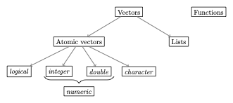

Overview
We already learned that everything in R that exists is an object. You most likely already noted that there are different types of objects: 2, for instance, was a number, but assign was a function.1 As you might have guessed, there are many more types of objects. To understand the fundamental object types in R is an essential prerequisite to master more complicated programming challenges than those we have encountered so far. Thus, this post is among those that will introduce you to the most important object types that you will encounter in R.
These data types are summarized in the following figure:
This post will be about functions. Different types of vectors are covered in the upcoming posts.
Functions
Functions are algorithms that apply a certain routine on an input, thereby producing (almost always) an output. The function log(), for instance, takes as input a number and returns as output another number, namely the logarithm of the input:
log(2)[1] 0.6931472Calling a function
There are, in principle, four different ways to call a function in R. Only two of them, however, are practically relevant for our purposes.
The by far most important variant is the so called prefix form. Here you first write down the name of the function. Then you open brackets, write down all the arguments of the function, which you separate by commas, and then you close the brackets. In the following example, the name of the function is assign, and its arguments are "test" and 2:
assign("test", 2)The second relevant way to call a function is the so called infix form. Here, the name of the function is written between the arguments of the function. This form is less common than the prefix form, but frequently used for mathematical operations, such as +, - or /.
Strictly speaking, it is only a shortcut, since every function call using the infix form can also be written as a function call in the prefix form:
2 + 3[1] 5`+`(2,3)[1] 5Both function calls are, in the end, equivalent, but in this context the infix form is clearly easier to read.
The arguments of a function
The arguments of a function usually provide the input of the function, and might also specify how the underlying routine should be executed exactly.
The function sum, for instance, takes as arguments an arbitrary number of numbers (its ‘input’) and returns the sum of these numbers:
sum(1,2,3,4)[1] 10Moreover, sum() also accepts an optional argument, which is called na.rm. This optional argument can take the value TRUE or FALSE. The letters na stand for “not available”, and refer to missing values. If we do not set the optional argument explicitly, it takes its default value. In this case, the defaults value is FALSE. You can get this information by calling the help-function: help(sum).
Optional arguments are no input in the classical sense, but they allow you to control the routine that the function applies. In the present case this means that if na.rm takes the value TRUE, all missing values in the input to sum() will be ignored:
sum(1,2,3,4,NA) [1] NAsum(1,2,3,4,NA, na.rm = TRUE) [1] 10If you want to know what arguments you can give to a function, you should call the function help() to have a look at the function documentation. In case of sum() we learn that in addition to its input, sum() accepts one additional argument, na.rm, which by default takes the value FALSE
To change optional arguments, we always need to (or better: should) specify the name of the optional argument. For the standard input this is not necessary, but sometimes still useful. Information about the names of the input, as well as the optional arguments, can always be obtained via the function help().
Define your own functions
Defining functions on our own is incredibly useful. We can do this by using the keyword function. To illustrate how to define our own functions, we will now define a function that we will call pythagoras and that takes as arguments the length of the two catheti of a right triangle. It then calculates the length of the hypotenuse using the Pythagorean theorem.
pythagoras <- function(cathetus_1, cathetus_2){
hypo_squared <- cathetus_1**2 + cathetus_2**2
hypotenuse <- sqrt(hypo_squared) # sqrt() takes square root
return(hypotenuse)
}We always define a new function by using the function function(). We start our definition by associating the new function with a name (here: ‘pythagoras’) so that we can use it later.
The arguments to function() are then arguments that our new function should accept. In the present case there are two such arguments: cathetus_1 and cathetus_2. After that comes the so called ‘function body’. It contains all the routines that the function should execute when called. The function body is always enclosed by curly brackets. In the example above we first compute the sum of the squares of the two catheti, and save this intermediate result as hypo_squared. This is the part of the Pythagorean theorem that you might know as \(c^2 = a^2 + b^2\). Since we are interested in the ‘normal’ length of the hypotenuse, we then use the function sqrt() to get the square root of hypo_squared. This is also the value that we wish our function would return to us. To make this explicit, we use the keyword return to specify the return value of the function.2
If we now call our function with the correct arguments, the routine above will be executed:
pythagoras(2, 4)[1] 4.472136Note: we could also call the arguments of our new function explicitly, which can be useful for transparency reasons when you call more complex functions:
pythagoras(cathetus_1=2, cathetus_2=4) # Also works the other way around[1] 4.472136Note: you can see the source code of a function (frequently) by typing the name of the function withough the brackets:
pythagorasfunction(cathetus_1, cathetus_2){
hypo_squared <- cathetus_1**2 + cathetus_2**2
hypotenuse <- sqrt(hypo_squared) # sqrt() takes square root
return(hypotenuse)
}
<bytecode: 0x7f7b3ef42bb8>Note that all object names used within the function body are lost after the function has been called. The deeper reason is that functions have their own environment. Because of this behavior, R produces an error in the following example, in which hypo_squared exists only within the function body.
pythagoras <- function(cathetus_1, cathetus_2){
hypo_squared <- cathetus_1**2 + cathetus_2**2
hypotenuse <- sqrt(hypo_squared) # sqrt() takes square root
return(hypotenuse)
}
x <- pythagoras(2, 4)
hypo_squaredError in eval(expr, envir, enclos): object 'hypo_squared' not foundNote that this behavior is intentional: otherwise, there would quickly be a lot of associations that are hard to keep track of. It is, however, of utmost importance to always remember this behavior, otherwise, very confusing errors might emerge, as in the following example in which you might have expected hypo_squared to take the value of the length of the hypotenuse squared within your right triangle:
hypo_squared <- 120
x <- pythagoras(2, 4)
hypo_squared[1] 120It is always a good idea to document your own functions. This is not only (but especially) the case if you want to share it with others: also, if you want to use your function after a while has past, you will be extremely grateful to your previous You for explaining to you how the function works and what arguments it takes. Or, in other words, nothing is more frustrating than getting back to your code after a few weeks and being forced to invest many hours to encypher what you have written previously.3
While you can document functions using simple comments at the end of each line I strongly recommend to get used to follow these conventions right from the start. Documenting our little function from above would look like this:
#' Computes the length of the hypothenuse in a right triangle
#'
#' This function takes the length of the two catheti of a right triangle as
#' arguments and computes the length of the hypothenuse.
#' @param cathetus_1 The length of the first cathetus
#' @param cathetus_2 The length of the second cathetus
#' @return The length of the hypothenuse of the right triangle as defined by
#' `cathetus_1` and `cathetus_2`.
pythagoras <- function(cathetus_1, cathetus_2){
hypo_squared <- cathetus_1**2 + cathetus_2**2
hypotenuse <- sqrt(hypo_squared) # sqrt() takes square root
return(hypotenuse)
}The documentation of a function must come immediately before the function definition and each line of the documentation starts with #'. In the first line you provide a title, which must not be longer than 80 characters.
Then, after inserting a blank line you describe what the function does in a bit more detail. Then, you describe each argument by using the decorator @param at the beginning of the lines. Finally, you describe the output of the function after starting the line with the decorator @return.
Thus, any documentation of a function should at least include the arguments and the kind of output.
Why you should use functions in the first place
Defining your own functions is extremely helpful in practice. It is recommended to enclose routines that you use several times into a function. There are several reasons for doing so:
Code becomes more concise and transparent It is easier to document code that uses functions because of the documentation conventions introduced above. Moreover, the code becomes shorter and easier to read. As a rule of thumb, after pasting and slightly adjusting some of your code twice, consider turning it into a function.
Functions help to structure your code Functions summarize, on a higher level of abstraction, your idea of how to solve a certain problem. Because you do not want to think about how to do this every time you encounter the same problem, it is better to summarize your thoughts in one place - the function.
Functions facilitate debugging Imagine you encounter a mistake in your implementation of a routine in your code. If this routine is used ten times in your code and you did not use functions, you would need to correct your mistake ten times. If you had used a function, you would have to correct the mistake only once. Needless to say that functions reduce the likelihood for a mistake by providing you with the incentive to document the code, and because they avoid incidental mistakes that will always happen if you write the same code many times in different places.
While these three reasons should already suffice to convince you of using functions whenever possible, there are even more reasons to use them. Many of them are related to the fundamental programming principle DRY (“Don’t Repeat Yourself”).
Footnotes
In fact, we will learn below that
2is not really a number, but a vector or length 1. Only in a next step,2counts as a ‘number’, or, more precisely as a ‘double’.↩︎Using
returnis, strictly speaking, not necessary, but I always use it for the sake of readability and transparency. An interesting debate about whether you should usereturnor not can be found here.↩︎Or, as the well-known
Rdeveloper Hadley Wickham puts it: “You are always coorpering with at least one other person: future-you.”↩︎